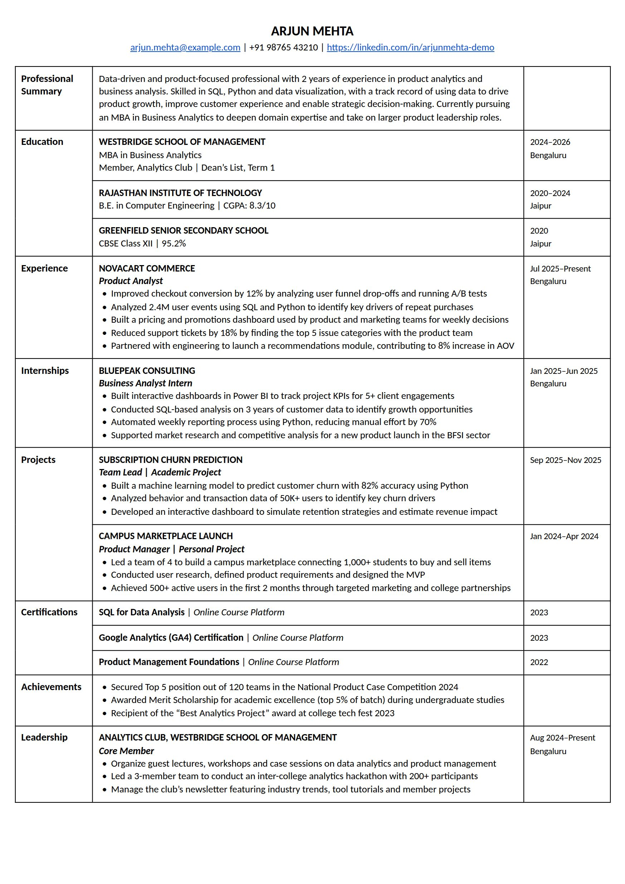

AIOne-page resumes that get shortlisted
Every CV starts out crumpled.
Too long, too wordy, the best numbers buried on page three. Scroll down and watch OnePager smooth it into one sharp page.
Free while in beta. Sign in with your email to start.
Your first one-pager is free. After that, ₹49 each.

01Read
We read every line you've written.
Upload a PDF or Word CV, or fill the Master CV form. Everything you've done is sorted into your Master CV and saved to your account.
02Rewrite
Then rewrite it to fit one page.
Result first, strong verbs, keywords for your target role. Every bullet is measured on the real page and fitted to exactly one line.
03Ready
One page. Shortlist-ready.
Checked against the resume rules, with every number taken from your own CV. Download it as PDF or Word.
- Professional one-page template
- Nothing made up
- PDF and Word
Keywords for your target role
Every bullet fits one line
Numbers only from your CV
Scroll to smooth it out